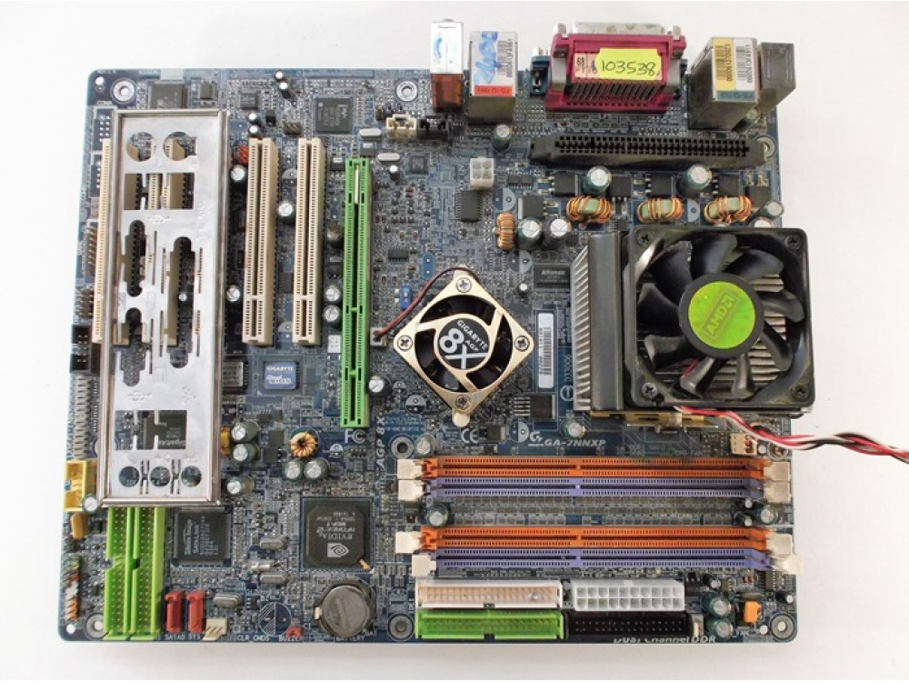

Socket A tabanlı Athlon XP işlemciler için tasarlanmış, nForce2 Ultra 400 chipsetli, dönemin üst seviye özelliklerine sahip anakart.
| Özellik | Değer |
|---|---|
| Soket | Socket A (462) |
| Chipset | NVIDIA nForce2 Ultra 400 |
| RAM | 3x DDR (3GB’a kadar) |
| AGP | AGP 8x Slot |